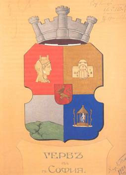

 Гербът на София, столицата на България, е използван и като символ на Столична община. Той е изработен през 1900 година от художника Харалампи Тачев, по това време още студент в Държавното рисувателно училище в града, за да бъде използван по време на Световното изложение в Париж през същата година. Първоначално гербът включва само крепостна корона, разположена над щита, който е разделен на четири полета. В горното ляво хералдическо поле е изобразена Улпия Сердика (портретен образ на римска императрица Юлия Домна, копие на изображение от антична монета), в горното дясно поле — църквата Света София, в долното ляво поле — планината Витоша и в долното дясно поле — златен балдахин над статуя на Аполон (също изображение от антична монета, символизиращо лечебните минерални извори в града и околностите му). В центъра на щита е добавен по-малък щит с лъв, копиран от открит в Търново медальон, който символизира и приемствеността между двата града като столици на България. През 1911 година, по предложение на помощник-кмета Ради Радев, към герба е добавен девизът „Расте, но не старѣе“, а през 1928 година – лаврови клонки от двете страни на щита. По времето на комунизма към герба на града е добавена червена петолъчка в крепостната корона и правописът на старее е нормализиран по правилата от 1945 година. След 1990 година тези промени са прeмахнати.